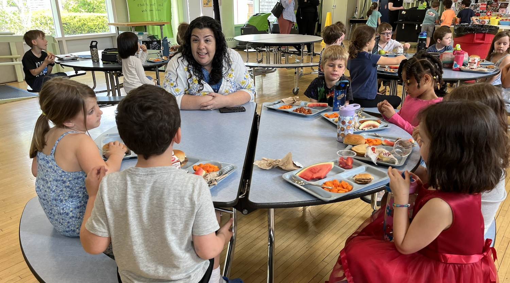

Massachusetts Farm to School connects farms, schools, and early education programs so more kids grow up knowing where their food comes from and eating better because of it.
Our small team is making change across Massachusetts' 400+ school districts. We're fueled by grants, partnerships, and support from people like you to help schools and early education programs source local food, teach kids where it comes from, and build partnerships that last.

Free, individualized support for school districts and early education programs that want to develop systems for bringing local food into their meal programs.
Professional development opportunities for teachers ready to inspire their students with hands-on, garden based learning
Harvest of the Month materials, recipes, and lessons that bring local food into classrooms and lunchrooms statewide.
Building the case for policies and permanent state funding to make farm to school a reality for every student in Massachusetts
Every gift, large or small, supports the students, farms, fishermen, producers, and communities of Massachusetts.